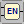

Erste Schritte
In fünf Schritten von einem leeren Panel zu einer funktionierenden Schaltung. Das Beispiel:
eine Lampe, die nur leuchtet, wenn zwei Schalter eingeschaltet sind (ein UND-Gatter).
1. Ein Panel wählen
Klicken Sie auf  Panelwahl und wählen Sie
Neues Standardpanel. Sie erhalten ein leeres Panel mit der Bauteilleiste oben.
Fehlt dort eine Schaltfläche, ist die Stufe vielleicht zu niedrig: Wählen Sie eine mit
Panelwahl › Stufe (für dieses Beispiel genügt Basis).
Panelwahl und wählen Sie
Neues Standardpanel. Sie erhalten ein leeres Panel mit der Bauteilleiste oben.
Fehlt dort eine Schaltfläche, ist die Stufe vielleicht zu niedrig: Wählen Sie eine mit
Panelwahl › Stufe (für dieses Beispiel genügt Basis).
2. Bauteile platzieren
Jedes Bauteil platzieren Sie auf dieselbe Weise: Klicken Sie in der Bauteilleiste auf seine Schaltfläche (der Mauszeiger
nimmt die Form des Bauteils an) und dann auf das Panel, wo es hin soll.
- Beginnen Sie mit der Versorgung, aus der Gruppe Versorgung: Setzen Sie die
 Quelle
oben in die Mitte, die rote
Quelle
oben in die Mitte, die rote  + Schiene nach links und die blaue
+ Schiene nach links und die blaue
 − Schiene nach rechts.
− Schiene nach rechts.
- Klicken Sie in derselben Gruppe auf den
 Schalter und setzen Sie ihn
rechts neben die + Schiene. Setzen Sie einen zweiten Schalter darunter.
Schalter und setzen Sie ihn
rechts neben die + Schiene. Setzen Sie einen zweiten Schalter darunter.
- Setzen Sie ein

UND-Gatter in die Mitte des Panels.
- Setzen Sie eine
 Lampe mit zwei Klemmen
(auch aus der Gruppe Versorgung) rechts neben das Gatter, ein Stück vor die − Schiene.
Lampe mit zwei Klemmen
(auch aus der Gruppe Versorgung) rechts neben das Gatter, ein Stück vor die − Schiene.
- Die Lampe kommt an ein Gatter und muss deshalb eine Lampe für 5 V sein: Rechtsklick auf die Lampe ›
Spannung der Lampe › Lampe für 5 V (auch an einem Gatter).
Ein platziertes Bauteil verschieben Sie, indem Sie es mit der linken Maustaste ziehen. Eine Schiene verlängern Sie,
indem Sie an einem Ende ziehen.
3. Verbinden
- Klicken Sie in der Bauteilleiste auf
 Verbindung.
Der Mauszeiger wird zu einem Draht.
Verbindung.
Der Mauszeiger wird zu einem Draht.
- Klicken Sie auf die + Klemme der Quelle (unten links). Ein Stück Draht erscheint. Ziehen Sie sein Ende zur Linie
der + Schiene. Verbinden Sie ebenso die − Klemme der Quelle (unten rechts) mit der Linie der − Schiene.
- Klicken Sie auf die Linie der + Schiene, auf Höhe des ersten Schalters, und ziehen Sie das Ende des Drahtes zur
linken Klemme dieses Schalters. Machen Sie dasselbe für den zweiten Schalter.
- Ziehen Sie einen Draht von der rechten Klemme des ersten Schalters zu einem Eingang des UND-Gatters und einen Draht von der
rechten Klemme des zweiten Schalters zum anderen Eingang.
- Ziehen Sie einen Draht vom Ausgang des UND-Gatters zur linken Klemme der Lampe und einen Draht von der rechten Klemme
der Lampe zur Linie der − Schiene: So ist der Stromkreis geschlossen.
Mehr dazu unter Verbindungen und unter Der Versorgungskreis.
4. Simulieren
Klicken Sie auf  Simulation starten.
Die Bearbeitungsschaltflächen und die Bauteilleiste verschwinden. Klicken Sie auf die Schalter:
Die Lampe leuchtet nur, wenn beide eingeschaltet sind. Klicken Sie erneut auf die Simulationsschaltfläche,
um zum Bearbeiten zurückzukehren.
Dieselbe Schaltung steht fertig in Lektion 4: Das UND-Gatter.
Simulation starten.
Die Bearbeitungsschaltflächen und die Bauteilleiste verschwinden. Klicken Sie auf die Schalter:
Die Lampe leuchtet nur, wenn beide eingeschaltet sind. Klicken Sie erneut auf die Simulationsschaltfläche,
um zum Bearbeiten zurückzukehren.
Dieselbe Schaltung steht fertig in Lektion 4: Das UND-Gatter.
5. Speichern
Klicken Sie auf  Panel speichern und geben Sie einen Namen ein.
Panels werden als
Panel speichern und geben Sie einen Namen ein.
Panels werden als .lpl-Datei im Ordner panels gespeichert.
Mit  Panel öffnen laden Sie es später wieder.
Panel öffnen laden Sie es später wieder.
Tipp: Unter
Panelwahl finden Sie auch drei eingebaute Panels. Das
Zählerpanel und das
Speicherpanel sind vollständig verdrahtet und funktionieren sofort. Im
Entscheidungspanel stehen die Bauteile bereit, und alles ist schon mit dem + und dem − verbunden; die
Drähte zu den Gattern und von den Gattern legen Sie selbst. Siehe
Panel & Raster.